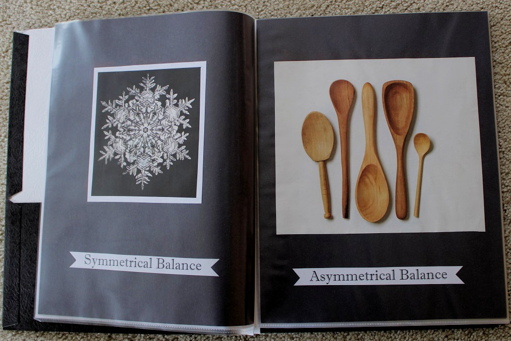

Ripped Paper Portrait and Collage
Two of my projects from this art class were a self-portrait and a collage.
The collage focused on the design principle of focal point. I created this
collage from pieces of magazine pages, and glued them together into a fun design.

This self-portrait was an assignment focusing on the value scale. I painted
sheets of paper with different shades of black and then ripped them apart
to create this self-portrait.
By: Kailey Slocum | Winter 2020 | Portrait and Collage
Design Journal
During this class, leading up to the final portfolio, I worked on my
design journal - a compilation of examples of the principles of design,
collected from magazines.
 |
|
 |
|
|
|
|
|
|
|
|
|
|
 |
|
By: Kailey Slocum | Winter 2020 | Design Journal
During an exploration of figure-ground relationships, this assignment
let me create my own artistic design of these relationships using a letter
of the alphabet. I randomly selected the letter 'P' and created a series of
sketches for each figure-ground relationship. Picking my favorite of each
type, I painted an example of each.
1. Figure-ground relationship: Stable
 2. Figure-ground relationship: Reversible
3. Figure-ground relationship: Ambiguous
2. Figure-ground relationship: Reversible
3. Figure-ground relationship: Ambiguous
By: Kailey Slocum | Winter 2020 | Figure-Ground Relationships
Pattern and Repetition
This project, focused on the design principles of pattern and repetition,
involved a craft knife and paper. The first part was an 8.5 x 11 sheet of paper
containing a variety of creative patterns.
The second part of this assignment was the completion of a large design of two
previously selected designs. The design was to be cut into a large sheet
of paper to create an artistic example of repetition and pattern.
By: Kailey Slocum | Winter 2020 | Pattern and Repetition
Symmetry
Learning about the design principle of symmetry, this assignment involved
20 thumbnail sketches of various types of symmetry.
Then, six of these designs were executed with black construction paper to
illustrate the three types of symmetry.
1. Symmetry
2. Asymmetry
3. Radial Symmetry
By: Kailey Slocum | Winter 2020 | Symmetry
Final Project
For my final project, I created 101 thumbnails of the theme 'door' and then
created my own piece of artwork of doors.

By: Kailey Slocum | Winter 2020 | Final Project